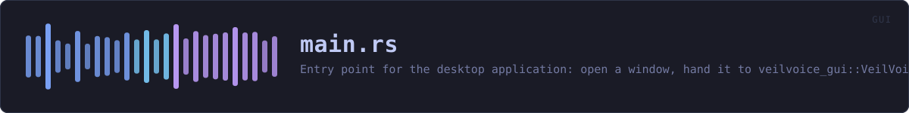

crates/veilvoice-gui/src/main.rs
veilvoice-gui · 172 lines · read the source here · or on GitHub
Entry point for the desktop application: open a window, hand it to veilvoice_gui::VeilVoiceApp, and get out of the way.
Everything of substance is in the library beside this file. That split is the point: a binary crate cannot be unit tested, so the whole user interface lives in lib.rs and its modules where tests can reach it, and this file holds only what genuinely needs a window to exist.
Three decisions are made here and nowhere else.
No console window on Windows, in release only. A release build sets windows_subsystem = "windows", so double-clicking the application does not flash up a terminal behind it. A debug build deliberately keeps the console, because that is where panics and eprintln! go and losing them while developing costs far more than the flash of a window is worth.
The icon is raw RGBA, not a PNG. assets/generate.py writes icon-32.rgba beside the PNG it generates from the same pixels, so the application can set its own title-bar icon without linking an image decoder. A decoder is a parser, a parser is an attack surface, and this one would exist solely to draw a 32x32 square. The length is checked before use, and a mismatch means the window simply opens without an icon rather than panicking at startup.
The window has a minimum size, and it is about width. Every tab is inside one scroll area, so anything taller than the window can be reached by scrolling to it and a short window loses nothing. Width is different: the layout is monospace and column-based, and below roughly 720 across, columns start overlapping rather than reflowing. So the floor is enforced here rather than left to produce an unreadable window on somebody else's machine.
It opens at 1100 by 720, which is large enough to read without resizing and still fits a 1366 by 768 laptop with its taskbar. Anything bigger opens partly off the bottom of a common screen, which looks like a broken application rather than a generous one.
In plain words
Opens the window and hands over to the rest of the application.
Almost nothing happens here. Everything of substance lives beside it in code that can be tested without a screen, and this file holds only the few things that genuinely need a window to exist: its size, its icon, and making sure a failure to open leaves a message behind.
WHAT THIS FILE CONTAINS
172 lines defining 3 functions (0 public), 0 types and 3 constants. Everything below is read out of the source, so it cannot disagree with the code.
WHAT CALLS WHAT
The functions this file defines, and the calls between them. An edge means the callee's name appears, called, inside the caller's body — a syntactic reading, not a type-resolved one.
The same graph as Mermaid source
%%{init: {"theme":"base","themeVariables":{"background":"#1a1b26","primaryColor":"#1f2335","primaryTextColor":"#c0caf5","primaryBorderColor":"#7aa2f7","secondaryColor":"#16161e","tertiaryColor":"#16161e","lineColor":"#737aa2","textColor":"#c0caf5","mainBkg":"#1f2335","nodeBorder":"#7aa2f7","clusterBkg":"#16161e","clusterBorder":"#2f3549","fontFamily":"ui-monospace, SFMono-Regular, Consolas, monospace","fontSize":"14px"}}}%%
flowchart TD
n_answered_without_a_window["answered_without_a_window<br/>line 99"]
n_answered_without_a_window["answered_without_a_window<br/>line 114"]
n_main["main<br/>line 118"]
n_main --> n_answered_without_a_window
click n_answered_without_a_window href "https://github.com/tilas01/veilvoice/blob/main/crates/veilvoice-gui/src/main.rs#L99" "open the source"
click n_answered_without_a_window href "https://github.com/tilas01/veilvoice/blob/main/crates/veilvoice-gui/src/main.rs#L114" "open the source"
click n_main href "https://github.com/tilas01/veilvoice/blob/main/crates/veilvoice-gui/src/main.rs#L118" "open the source"
classDef helper fill:#1f2335,stroke:#bb9af7,color:#c0caf5
class n_answered_without_a_window,n_answered_without_a_window,n_main helperThis site loads no third-party script, so it cannot run Mermaid; the diagram above is the same nodes and edges drawn by the generator instead. GitHub renders the source below directly.
ITEMS
| Item | Line | Documentation |
|---|---|---|
ICON_RGBA const | 58 | The window icon, as raw 32x32 RGBA produced by assets/generate.py. |
ICON_SIZE const | 59 | |
USAGE const | 67 | What --help prints, on the platforms where printing works. |
answered_without_a_window fn | 99 | Answer --help and --version before a window is opened. |
answered_without_a_window fn | 114 | |
main fn | 118 |